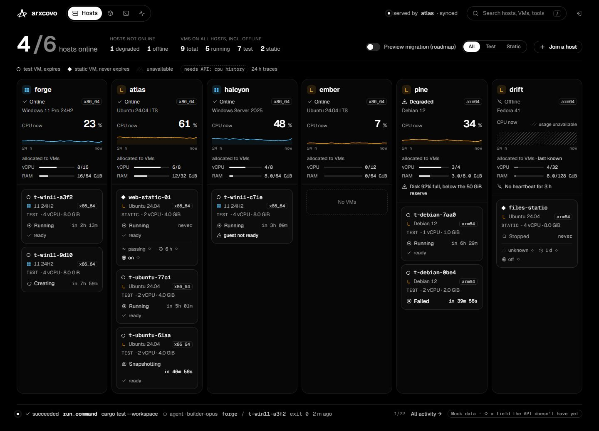
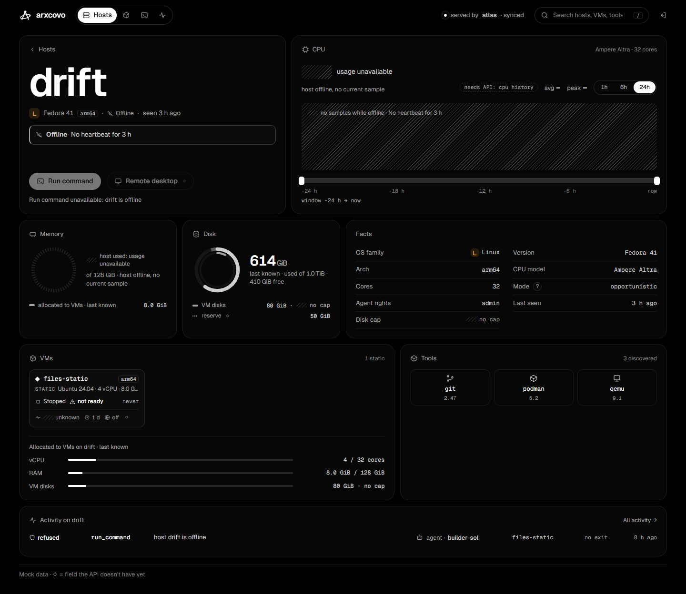
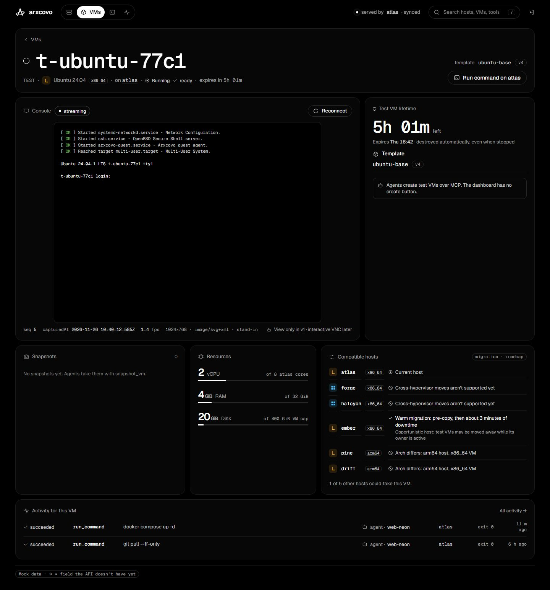

Hosts board: 6 hosts (new: ember), Join a host in the header, one legend line, ◇ marks fields the API doesn't have yet

host.html?id=drift: the offline host, CPU and memory hatched, last-known disk, Run command disabled with the reason

vm.html?id=t-ubuntu-77c1: a test VM gets a lifetime tile; compatible hosts use the same rule checker as the board